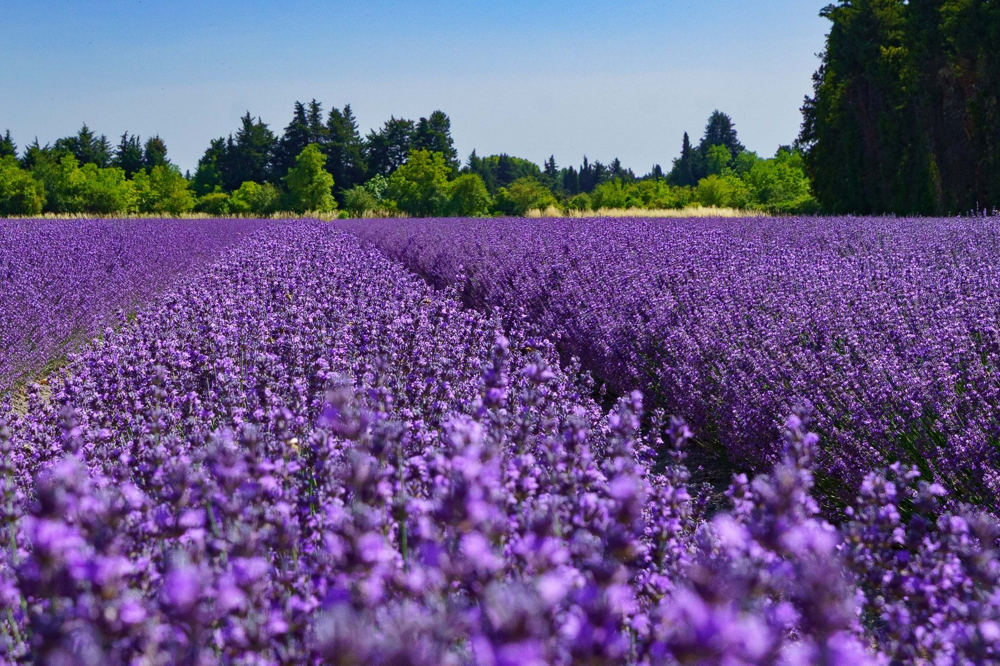
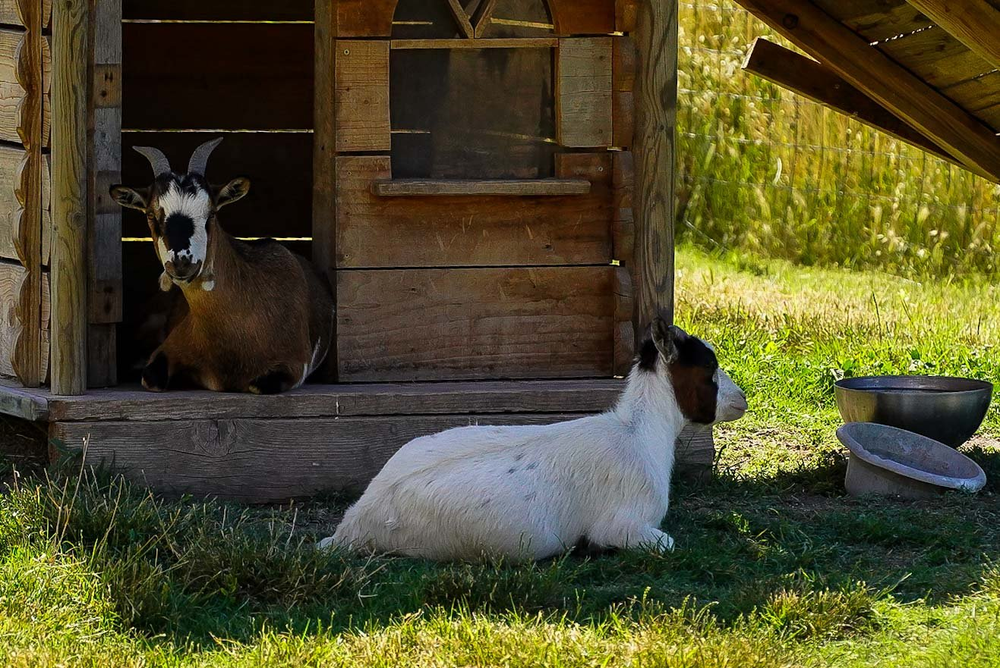
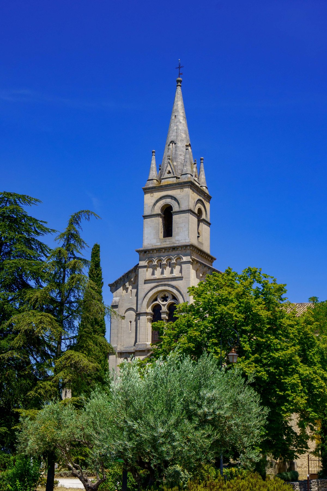
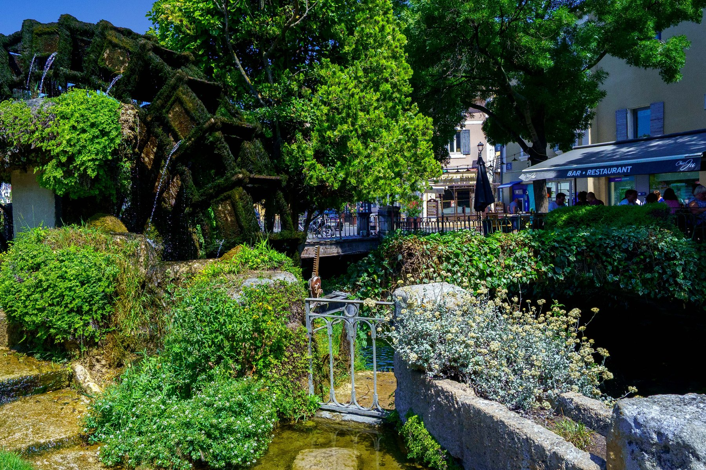
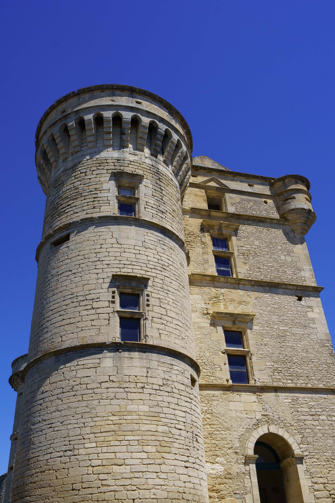
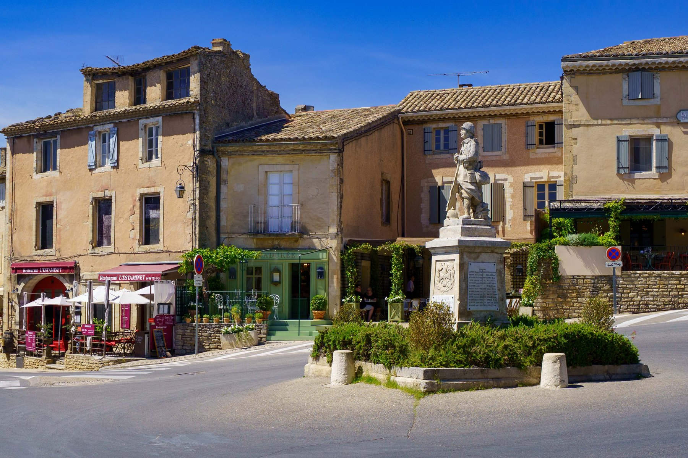
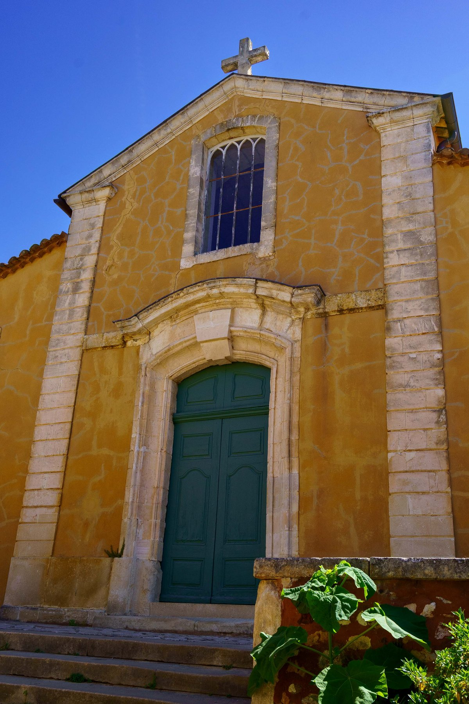
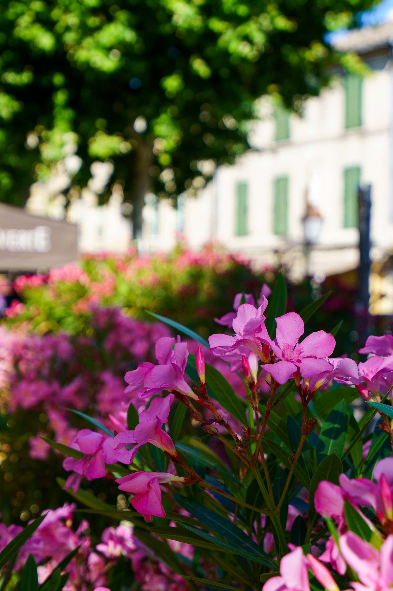

Gordes & the Luberon
Home base for this stretch was Thor, a quiet Vaucluse town wrapped in lavender fields, a couple of goats keeping watch outside the door, and its own Romanesque church, Notre-Dame-du-Lac, anchoring the old center. From there, the villages of the Luberon and beyond were all within easy reach. L'Isle-sur-la- Sorgue turned out to be a town built quite literally on water, moss-covered wheels still turning in the channels that once powered its mills, the collegiate church's tower rising above it all. Gordes needed no introduction — the postcard hill town of the Luberon, its château crowned with round machicolated towers, the whole village tumbling down the hillside in tiers of pale stone. Roussillon answered with color instead of height, its church front glowing the same ochre as the cliffs mined for pigment just outside town. And a day trip south to Saint-Rémy-de-Provence turned up an unexpected echo: a stand of olive trees framed against the jagged Alpilles, the very view Van Gogh painted from the asylum grounds where he spent his last year in France — a quiet lunch on a vine-shaded terrace, and oleander blooming along the square, closed out the day.










